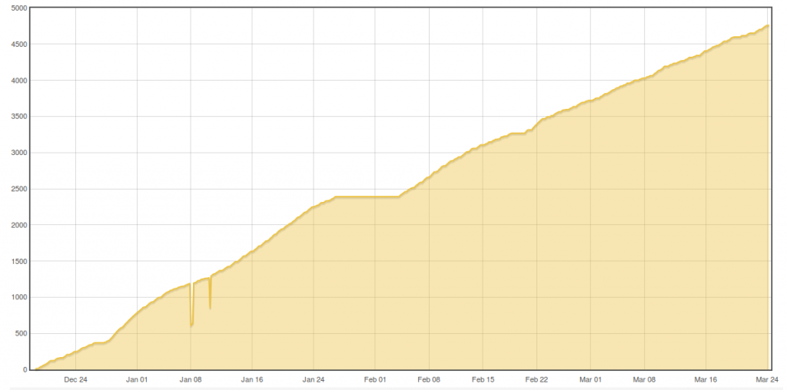

There has been a bug for a while that resulted in gaps in the bar graph generated by the data from wh accumulator, accumulator and power to kwh accumulator processes. A day would show as missing if it was only the midnight datapoint that was missing (recorded as a null value in the phpfina data file) even if there was a datapoint at 10s past midnight and the rest of the day complete.
The new default data viewer available in the 'newgetdatamethod' branch of emoncms: https://github.com/emoncms/emoncms/tree/newgetdatamethod and on emoncms.org has an option to skip or show missing datapoints in a feed. The result can be quite interesting when the skipmissing tick box is unticked and points to a packet loss issue. The two example graphs below show a kwh accumulator feed with its missing data points.
If the bargraph tries to select a midnight value in any one of those gaps it will miss the entire day. If you zoom in around a missing midnight datapoint there is usually enough data points within a few 10s of seconds either side to provide an accurate midnight reading.
Rather than store a null value if a particular datapoint is missing its possible to get around this issue by joining the last known value with the next known value, filling the missing datapoints in between with a linear interpolation.
I've added this feature as a 'padding_mode' option to the phpfina engine which is now in the https://github.com/emoncms/emoncms/tree/whaccumulator_padding_mode emoncms branch and live on emoncms.org.
All feeds already created with the wh_accumulator, accumulator or power_to_kwh input processors on emoncms.org will now fill those missing values joining the last and the current value with a straight line resulting in much more reliable bargraphs created with this method. Im also working on fixing existing data in this way too, with about 100 of ~1000 feeds already fixed on emoncms.org.

This is a before and after screenshot of a bargraph (including a period where the monitor was actually off for an extended period in the start of feb) Its not the best example but many of the days that where missing are now visible.
There is documentation on how to use accumulating data in this way for daily bargraphs here:
https://github.com/openenergymonitor/documentation/blob/master/Applicati...
http://openenergymonitor.blogspot.co.uk/2014/08/monitoring-solarpv-heatp...
and a little more background info here:
http://openenergymonitor.org/emon/node/3995
We've been discussing timezone support in the thread here http://openenergymonitor.org/emon/node/10363. One of the big advantages of the accumulator approach is that recording the data is timezone independent as its only at the graphing stage that the daily totals are calculated, its also possible to pull out any other interval totals such as hourly or monthly.
We're still working towards continuous sampling and watt hour accumulation as default on the emontx/+soon emonpi which also fits into this reducing the reliance on the basestation/emoncms/internet connection/webserver for accurate energy totals.
Im also intending to create a post processor module that will generate accumulating watt hour feeds from existing power feed data so that the above graphing tools can be used.
I also intend to merge both the 'newgetdatamethod' and 'whaccumulator_padding_mode' branches into the master branch and the low write sd card branch of emoncms soon and will document how to fill existing missing data as above.
Thanks
Trystan
Re: Fix for accumulator based bargraph data gaps
Great news !
Re: Fix for accumulator based bargraph data gaps
Thanks Eric!
Re: Fix for accumulator based bargraph data gaps
Hi trystan,
Did you have a look on the bug you described here ?
I'm not talking about the time offset which is different for each of my PHPTimestore.
Here, I'm talking about the PHPFIWA/FINA feeds that are not displayed the good day.
Eric
Re: Fix for accumulator based bargraph data gaps
Ah yes I fixed that on Monday too, if we're talking about the kwh values being shifted one day ahead? https://github.com/emoncms/emoncms/commit/db3751524a5ff29254f40d8a799b8f...
Re: Fix for accumulator based bargraph data gaps
Yes, I was talking about this one. Good news !
Using your fixed version, does the bar for the current day appear in the graph ?
Eric
Re: Fix for accumulator based bargraph data gaps
No not yet, just the previous day, but yes would be good to bring the current day in there. To do that requires another seperate request in order to fetch the last value, so its a bit more complicated but possible to do.
Re: Fix for accumulator based bargraph data gaps
Hi Trystan,
I am still seeing the bug where bargraph shows value from yesterday but with todays date. Is this because I am using emoncms.org which is still at v8.3.5? (I ask because when I follow the Github link to the fix that you posted it shows 8.5 which I *assume* means it's only fixed in v8.5?).
I've searched and couldn't find any other reference to any other solution for this problem.
Re: Fix for accumulator based bargraph data gaps
I'm not sure if my data (or lack of it!) fits in here with this discussion or not but I'm experiencing large amounts of null points in my 'grid' (import power) see attached which doesn't lend itself to accurate interpolation.
Any comments would be appreciated
Chris
Re: Fix for accumulator based bargraph data gaps
Hi Chris,
Funnily enough, I also have a similar problem, and was thinking about starting a separate thread. In my case, I have identified that I am losing data due to problems with the RF transmission from my emontx3.4 to my Rpi. I believe I proved this at the weekend by changing quiet mode in emonhub, and could then see lots of spurious packets arriving at the Rpi, and I think some of them are impacting some of my real packets, as I could see some packets with the correct nodeid, but being marked as malformed and discarded.
I tried moving my Rpi to improve the signal strength, hoping this would reduce the volume of lost packets, and although I think it's helped, it's not solved the problem, so I still need to do more research on RF transmission problems
Re: Fix for accumulator based bargraph data gaps
Hi Ian
I don't think my problem is RF related.
The first graphs are from 6th June 2012 when I first ran my original shop kit EmonTX, Emonbase, EmonGLCD setup for the first time. In spite of these 'null' points my EmonTX data is within 1% of my solar meter read data.
Later graphs compare the same day in 2015 & there is little difference in the number of 'null' points; however, over the following week (6th to 13th June 2015) there has been a marked increase in the number of 'null' points but still the solar PV error between EmonTX & PV meter has remained low.
The error appears to be in the 'grid' data (null points increased dramatically over the week 6th to 13th June 2015) which I'm at a loss to explain as no changes/adjustments have been made to software or hardware
Re: Fix for accumulator based bargraph data gaps
On XT 8.5.2 version i've refactored the padding mode usage as a new engine post function optional argument.
It can be implemented genericaly on any engine.
The old feed->insert_data_padding_mode function was removed and you just need to pass the optional parameter (in 5th position) from process_model.php like this :
$padding_mode = "join";
$this->feed->insert_data($feedid, $time_now, $time_now, $new_kwh, $padding_mode);